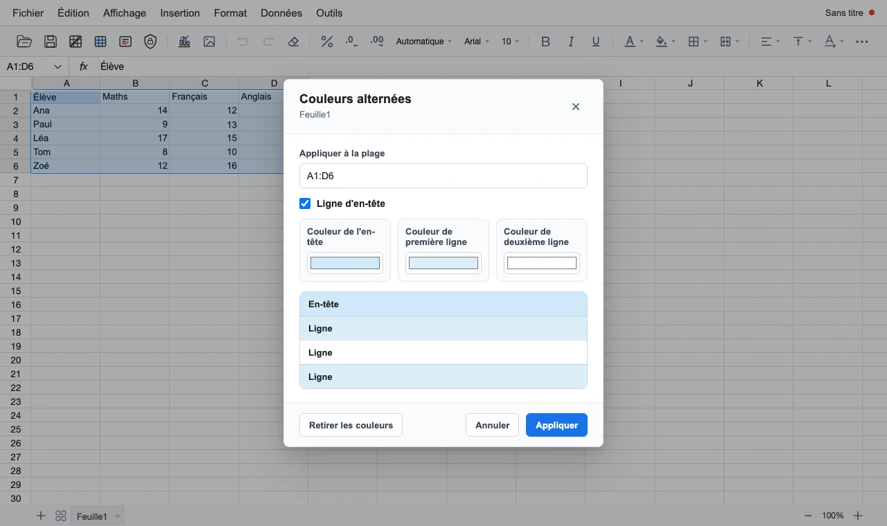

Mise en forme
Texte
| Commande | Accès |
|---|---|
| gras, italique, souligné | ; Ctrl B, Ctrl I, Ctrl U |
| police | liste Arial : treize polices |
| taille | liste 10, ou Format › Taille de police : 9 à 72 |
| couleur du texte, du fond | |
| effacer la mise en forme | , Format › Effacer le format |
Dans la palette d’une couleur, Réinitialiser la couleur la retire ; Personnalisé ouvre le sélecteur du système.
Pendant la modification d’une cellule, la mise en forme s’applique à la partie sélectionnée du texte.
Alignement
| Commande | Choix |
|---|---|
| horizontal | gauche, centre, droite |
| vertical | haut, milieu, bas |
| rotation | inclinée, verticale, empilée |
| renvoi à la ligne | Débordement : sur les cellules vides voisines ; Renvoi à la ligne : sur plusieurs lignes ; Rogner : coupé au bord |
Sans alignement choisi, les nombres et les dates sont à droite, le reste à gauche.
Bordures
trace la bordure choisie ; sa flèche donne les côtés (supérieure, extérieure, intérieures, toutes, aucune, diagonale), la couleur et le style du trait. Choisir couleur et style avant le côté.
Fusionner
ou Format › Fusionner les cellules :
| Commande | Effet |
|---|---|
| Fusionner tout | une seule cellule, qui garde un seul contenu |
| Fusionner verticalement | une cellule par colonne |
| Fusionner horizontalement | une cellule par ligne |
| Annuler la fusion | rend les cellules |
Une plage qui contient des cellules fusionnées ne peut pas être triée ni filtrée.
Couleurs alternées
ou Format › Couleurs alternées... colore une ligne sur deux de la plage sélectionnée, avec une ligne d’en-tête si l’on veut. Les trois couleurs se choisissent.

Ce sont des couleurs de fond ordinaires : elles ne suivent pas un tri ni une insertion de ligne. Retirer les couleurs les efface de la plage.
Quadrillage
ou Affichage › Afficher › Quadrillage masque ou affiche les lignes grises, dans toutes les feuilles du classeur. L’impression a son propre réglage.
Pour une couleur qui dépend de la valeur, voir Formatage conditionnel.